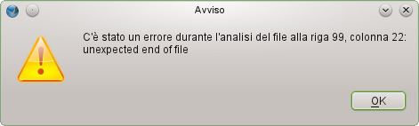
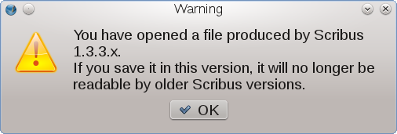
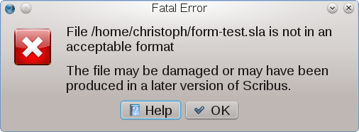

Una delle cause principali che possono portare a file danneggiati (qualunque file, non soltanto file di Scribus) è una procedura di salvataggio interrotta, ad esempio per un'interruzione dell'alimentazione elettrica, o per un blocco del sistema mentre il programma stava scrivendo i dati sul supporto di salvataggio (come un disco fisso o una memoria USB). Altre cause possono essere errori del file system o un supporto di salvataggio danneggiato. Inoltre, poiché i file SLA (e anche quelli nel formato più vecchio SCD) sono file di testo basati su XML, essi possono essere danneggiati dagli utenti stessi, se li aprono e li modificano in un editor di testo.
Qualunque sia la causa del danno subìto da un certo file, la conseguenza sarà che Scribus non riuscirà ad analizzare (cioè a leggere e interpretare) il contenuto del file, ad esempio per la mancanza di determinati marcatori XML o per la presenza di dati non validi. In queste situazioni, Scribus mostra un avviso che indica il numero della riga all'interno del file in cui ha incontrato l'errore:
|  |
Per riparare file SLA e SCD danneggiati basta un semplice editor di testo. Per praticità è meglio che l'editor di testo utilizzato abbia più funzioni di quelle fornite, ad esempio, dal Blocco Note di Windows. Al minimo, l'editor di testo dovrebbe mostrare i numeri di riga ed essere dotato di evidenziazione della sintassi XML. Se i concetti base dell'XML (marcatori, ecc.) non vi sono familiari, potete inviare una segnalazione di errore e allegarvi il file danneggiato. In generale, potete aspettarvi che il file venga riparato dagli sviluppatori entro 48 ore. Ma tenete presente che non tutto il contenuto potrebbe essere recuperato, poiché potrebbe essere stato salvato solo in parte prima del verificarsi dell'errore. Quindi il risultato della riparazione potrebbe essere soltanto un file di nuovo apribile da Scribus.
Anche se è relativamente facile riparare file SLA e SCD, le cose sono più complicate se stavate salvando una versione compressa (SLA.GZ o SCD.GZ). In tal caso dovrete usare uno strumento in grado di riparare un archivio gzip danneggiato, o, se ciò è impossibile, recuperare per quanto possibile il contenuto dell'archivio.
Quando aprite un file creato con una versione precedente di Scribus, vedrete un avviso che sta a voi decidere se ignorare oppure no. Potete ignorarlo se siete certi che il file non dovrà più essere aperto con una versione precedente, ad esempio se il file è stato creato da voi e se siete passati a una versione più recente di Scribus. Ma se lavorate con altre persone, dovreste sempre assicurarvi che tutti usino la stessa versione di Scribus.
|  |
Ma supponiamo che abbiate ignorato l'avviso, o che abbiate salvato il file senza volerlo, sapendo che le altre persone che lavorano con voi devono o vogliono usare una versione precedente. Come rimediare? Salvare in un formato di file precedente non è possibile. Ciò che potete fare in questa situazione è raggruppare tutti gli oggetti contenuti in ciascuna pagina e copiare ciascun gruppo nella Biblioteca, pagina per pagina. Potrete poi mandare la Biblioteca alla persona che usa la versione precedente, poiché il suo formato non è cambiato da una versione all'altra. Tuttavia le cornici di testo collegate su pagine diverse non possono essere ricreate in questo modo: dovrete ricollegarle manualmente nella versione più vecchia.
Anche se ogni versione di Scribus è in grado di aprire i file creati in quelle precedenti, compresi i file SCD e SCD.GZ generati dalle versioni 0.x che risalgono a più di dieci anni fa, dovreste sempre controllare la disposizione del testo sulla pagina, perché gli algoritmi di layout del testo di Scribus sono molto cambiati nel corso del tempo. Questa precauzione è importante soprattutto con le versioni più vecchie dei file, ma è consigliabile anche controllare sempre l'aspetto del testo se aprite il file su un altro computer dopo un aggiornamento dei tipi di carattere. Scribus esegue sempre una verifica dei tipi di carattere all'avvio, ma non controlla se sono state usate diverse versioni di uno stesso carattere quando apre un file. Quindi, l'uso di diverse versioni di un certo carattere o di caratteri con lo stesso nome PostScript, ma provenienti da diversi rivenditori/fonti, può risultare in una disposizione del testo alterata o errata.
| Avviso importante per i file creati con le versioni di Scribus dalla 1.3.5 alla 1.4 Release Candidate 5: in Scribus 1.4 Release Candidate 6 è stata apportata una modifica al componente che provvede alla disposizione del testo sulla pagina; essa può provocare rilevanti cambiamenti nella disposizione del testo in cornici di testo che usano certe caratteristiche del testo (ad esempio lo spostamento della prima riga). Questo potrebbe rendere necessaria la riformattazione del testo contenuto in file creati in versioni precedenti alla 1.4RC6. |
I file creati da versioni successive di Scribus non possono essere aperti dalle versioni precedenti. Questo accade anche quando entrambe le versioni utilizzano lo stesso formato di file, ad esempio la 1.3.9 e la 1.4.0. Se si tenta di aprire un file creato in una versione precedente, viene visualizzato l'avviso mostrato qui sotto. Questo stesso avviso appare anche se si apre un file con estensione SLA, SLA.GZ, SCD o SCD.GZ che non è un file di Scribus (potrebbero esistere altri programmi che usano queste estensioni). Naturalmente, questo vale anche per gli altri formati di file che Scribus può aprire direttamente.
|  |
Se, per qualche motivo, non potete usare la più recente versione stabile di Scribus, e la vostra versione può utilizzare lo stesso formato di file, potete aprire il file SLA in un editor di testo e modificare la versione di Scribus nell'intestazione del file:
Esempio:
<?xml version="1.0" encoding="UTF-8"?>
<SCRIBUSUTF8NEW Version="1.4.0">
potrebbe essere modificato così:
<?xml version="1.0" encoding="UTF-8"?>
<SCRIBUSUTF8NEW Version="1.3.9">
Tuttavia, lo fate a vostro rischio e pericolo, specialmente dopo le modifiche apportate al componente di impaginazione del testo nella versione 1.4RC6.
Può apparire un avvertimento banale e noioso, ma ogni programma e ogni sistema operativo può bloccarsi o interrompersi, e provocare così la perdita di parte o tutto il vostro lavoro. Allo stesso modo, nessun computer funzionerà perfettamente per sempre, e come ogni cosa materiale, cesserà di funzionare un giorno. Dunque, l'eterno consiglio “salvate il file regolarmente” vale anche per Scribus. Fortunatamente Scribus dà la possibilità di rendere automatico il salvataggio, permettendovi di concentrarvi sul lavoro di impaginazione.
Per far sì che Scribus salvi il vostro lavoro a intervalli regolari, potete attivare il “salvataggio automatico” e impostare l'intervallo nella sezione Documento delle Preferenze/Impostazioni documento. Oltre a salvare automaticamente il documento, Scribus ne crea anche una copia. Il nome del file della copia consiste del nome del file originale con l'aggiunta dell'estensione “.autosave”. Quindi, la copia salvata automaticamente di ilmiofile.sla si chiamerà ilmiofile.sla.autosave. Se un file SLA fosse danneggiato, potreste rimuovere l'estensione “.autosave” e poi aprire questa versione in Scribus. In questo modo avrete l'ultima versione salvata automaticamente del vostro documento.
Se il salvataggio automatico non è abilitato o se si verifica un errore che provoca la chiusura del programma tra un salvataggio automatico e il successivo, non tutto è perduto, perché Scribus tenta di salvare una copia di emergenza del file prima di uscire. Se questo meccanismo funziona, troverete la copia di emergenza nella stessa directory del file originario, con in più l'estensione “.emergency”. Quindi la copia di emergenza di ilmiofile.sla verrà salvata come ilmiofile.sla.emergency.
Prima di rinominare un file salvato automaticamente o una copia di emergenza, ridandogli il nome di un normale file di Scribus nella stessa directory (che provocherebbe la sovrascrittura/cancellazione dell'originale), dovreste confrontare le dimensioni dei file. Ad esempio, se il file originale è di 5 MB, ma il file *.autosave o *.emergency è di soli 40 KB, certamente il meccanismo non ha funzionato correttamente.
Le immagini caricate in una cornice immagine non vengono inserite nel file di Scribus. Invece, Scribus salva il percorso dell'immagine relativo rispetto al file di Scribus. Quando aprite il file di Scribus, il programma ricerca le immagini usate nel documento nei percorsi salvati nel file e nella directory in cui il file stesso si trova. Se avete spostato in una diversa directory il file di Scribus oppure le immagini, probabilmente queste non saranno trovate, e le cornici immagine saranno vuote. Per rimediare, potete usare Utilità > Gestione immagini per far sì che Scribus cerchi le nuove posizioni delle immagini.
Se prevedete di trasferire file di Scribus contenenti immagini da un computer all'altro, dovreste sempre usare la funzione Raggruppa per l'output per fare in modo che tutte le immagini siano sempre incluse.
Notate che i motivi bitmap devono essere trattati come immagini.
Scribus salva non solo i percorsi dei file immagine, ma anche di altri tipi di file usati in collegamento al documento: i tipi di carattere e i profili colore. Quando si apre un documento, viene chiesto di sostituire entrambi i tipi di file. Maggiori informazioni si trovano nelle pagine sui caratteri e sulla gestione del colore. La sostituzione dei tipi di carattere e/o dei profili colore può avere conseguenze sgradite sull'impaginazione o sulla correttezza dei colori. Per evitare errori, anche in questo caso dovreste esportare caratteri e profili colore insieme al documento con la funzione Raggruppa per l'output.
Poiché il contenuto delle cornici rendering viene ricreato ogni volta che si apre un file, dovreste assicurarvi che le applicazioni esterne che generano il contenuto delle cornici rendering siano installate e configurate correttamente, se scambiate file tra computer e/o piattaforme. Altrimenti le cornici resteranno vuote.
Se un'installazione di Scribus che funzionava senza problemi inizia, senza ovvie ragioni, a comportarsi in modo strano o non funziona affatto, ciò potrebbe essere dovuto a file delle preferenze danneggiati. Se Scribus si comporta in modo strano, potete tentare di rinominare la directory nascosta .scribus che contiene questi file, e riavviare Scribus. Il programma crea allora nuovi file di configurazione “da zero”. Non è detto che questo risolva il vostro problema. Se non lo fa, probabilmente la causa non dipende da Scribus: potrebbe essere, ad esempio, un problema hardware o un problema di compatibilità dopo un aggiornamento di altri componenti del vostro sistema, come un aggiornamento di Windows, o di Qt4 in ambiente Linux/UNIX. In tal caso potete cancellare la nuova directory ./scribus e ripristinare quella che avevate rinominato. Naturalmente questo non risolverà il vostro problema, ma almeno non perderete le vostre impostazioni.